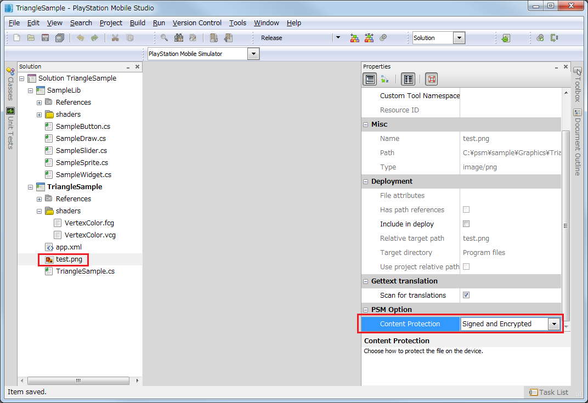

この文書ではファイルの署名と暗号化について説明します。
Contents
PSMの開発・実行環境では、コンテンツの保護のために、ファイルを署名・暗号化する処理を行っています。
署名・暗号化を行うことにより、ファイルの解析やデータの改竄、違法なコピーからコンテンツを保護することができます。
なお、署名・暗号化のプロセスは実機が対象です。PCシミュレータ上では行われません。
アセンブリファイル (実行ファイル、dll) は必ず署名・暗号化されます。アセンブリファイルから署名・暗号化の設定を外すことはできません。
開発者が署名・暗号化の設定を選択できるのは次のファイルです。
- 画像ファイル、音楽ファイル、テキストファイルなど。
- シェーダープログラム (Plain は選択不可)
ファイルに対する署名・暗号化の設定は、以下の手順で行います。
- Solutionウィンドウでファイルを選択し、[右クリック] - [Properties] を選択し、プロパティウィンドウを開きます。
図1
- プロパティウィンドウの [PSM Option] - [Content Protection]から、次のいずれかを選択します。
List Item 説明 Plain ファイルに対して署名も暗号化も行いません。 Signed ファイルに対して署名のみ行います。 SignedAndEncrypted ファイルに対して署名と暗号化を行います。
署名・暗号化されたファイルの読み込み時間は、Plainのファイルに比べて若干長くなります。 読み込みにかかる時間は、SignedAndEncrypted > Signed > Plain の順です。
なお、処理時間に影響があるのはファイルの読み込み時のみです。メモリ上に展開されたデータにアクセスする時間には影響はありません。